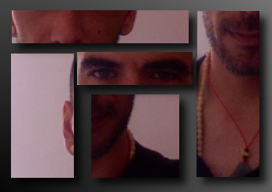

lang fr|gb

happy father, Debian lover, FsF member, livarp creator...

whoami
arnault aka arpinux...
as you may have noticed, I am french, and sometimes i speak english (especially to name my folders "downloads" or "pics" ..), i don't like capital letters, and i sometimes make spelling fotes.
i was born in the 70s, which means that I did not get to enjoy. but I try my best not to be in my day (you know the generation nuclear / AIDS / genocide not seen / Mad Cow / and so on ...).
i've discovered GNU/Linux on the later, at age 32, when I was preparing my first (and only for now) exhibition of drawings (some of which are visible on my page Devart). an exhibition yes, but i needed a poster, program, flyers. this is where my friend and talented Linux contributor dYp just said "just use gimp?!" - "huh? what's that?" and he gave me my first GNU/Linux livecd: Ubuntu 6.06 Dapper Drake.
ubuntu adventure lasted only the time of the discovery of the GUI, then came my first tapotis in xterm: the terminal ... ahhh ... how to say, the g33k will unsderstand :D, it was ecstasy. and while dYp praised the joys of simplicity in ubuntu, i passed on crunchbang linux, and enjoy to configure openbox ;). so dYp give me his Bible, the Linux System that made me discover another world. gradually, i learned to fabulous day where i could post the solution to a problem on a forum. then came the turn of my first pack of icons, the first walls, and here, the virus of contribution was in me :).
The GNU / Linux community as a whole, this is a dream, the world of "i've got a project .." - "wait, i just help you" - "me too" - "me too": D.
then as i feel like home, i stay, and i try to bring my contribution to the OpenSource world.
..livarp is born from my desire to play with live-helper, the Debian project to build its own installable livecd. then, as i really enjoy myself and learn, i decided to share and to make (re)discover some window managers too little used in modern distributions (to my taste).
and so i am here to tap on my keyboard, to introduce myself, hoping you'll enjoy as much as me livarp, and you'll find some good tips in the wiki.
@+
arp :)